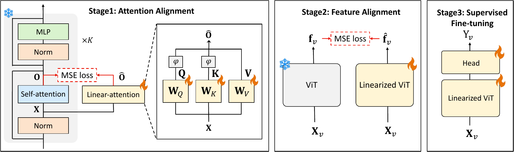
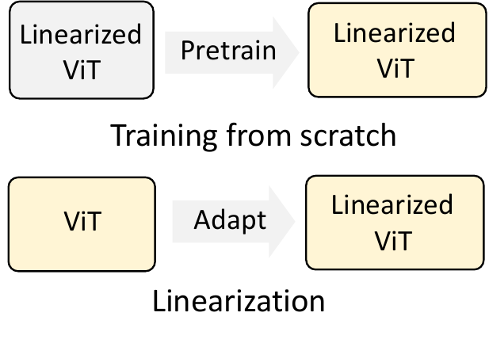
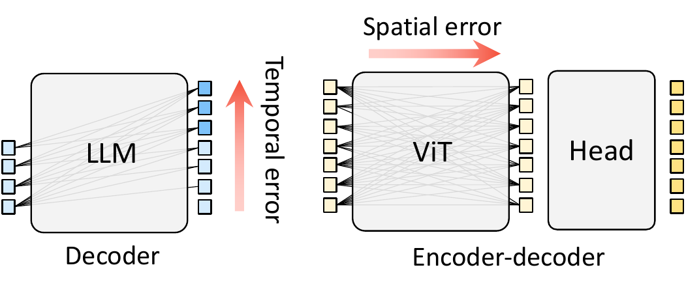
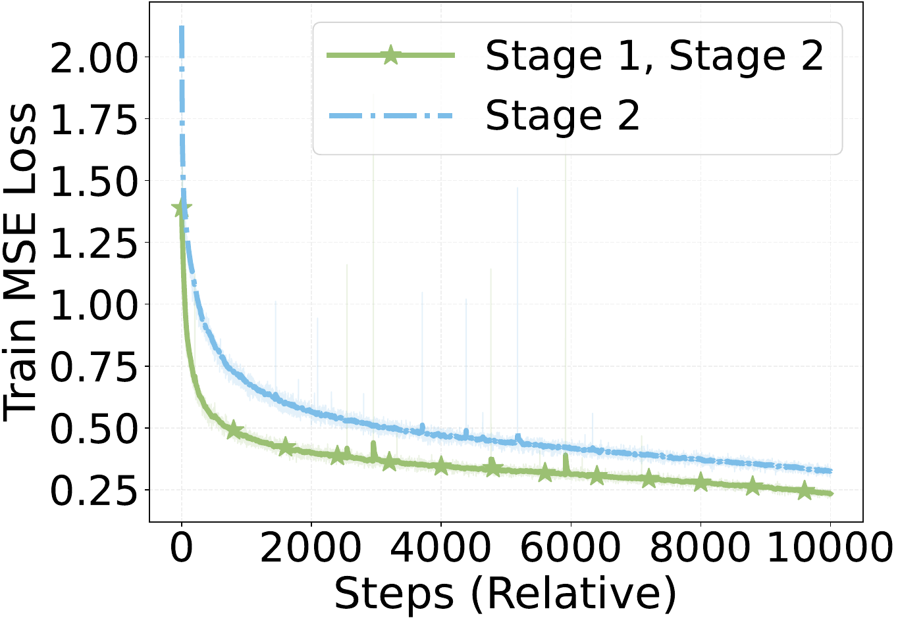
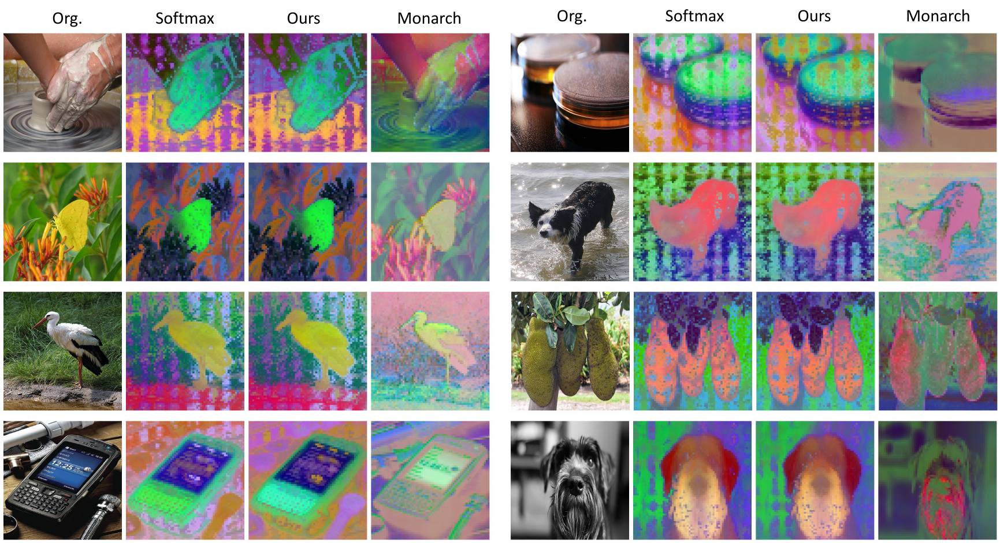

Reuse pretrained VFMs
Begin with an existing softmax-based vision transformer instead of training a linear-attention model from scratch.

Begin with an existing softmax-based vision transformer instead of training a linear-attention model from scratch.
Match attention blocks first, then recover the complete model’s feature representation with a frozen teacher.
Use the adapted backbone for classification and segmentation; the alignment recipe also works with other attention modules.
Vision foundation models built on Vision Transformers perform well across many tasks, but softmax attention becomes expensive for long visual sequences. Existing linear-attention ViTs often require training from scratch, while linearization methods designed for language models do not transfer well to vision. ViT-AdaLA adapts a pretrained ViT in three stages: attention alignment, feature alignment, and supervised fine-tuning. The first stage matches individual linear-attention blocks to the original softmax blocks; the second corrects accumulated errors by matching final-layer features to a frozen teacher. Experiments on classification and segmentation show that this simple, model-agnostic adaptation strategy preserves much of the foundation model’s performance while improving scalability at higher resolution.
High-resolution images produce longer visual sequences, making quadratic softmax attention increasingly costly. Can we obtain linear-attention efficiency without discarding the pretrained visual knowledge that makes a VFM useful?


Training a new linear-attention backbone from scratch must first acquire its own visual prior. Instead, we start from an existing VFM such as DINOv2 or CLIP and transfer that prior to a linearized model. Adaptation still requires training; the goal is to reuse pretrained knowledge.
A ViT supplies spatial features to downstream task heads. Attention replacement can alter patch relationships and intermediate features across layers, so a good local approximation need not preserve the full encoder’s representation. This motivates attention alignment followed by global feature alignment.
Accumulated representation drift is not exclusive to ViTs. Here, the focus is preserving spatial consistency and transferable visual features.
Our goal: linearize the vision foundation models without training from scratch.
The main contribution is a progressive adaptation paradigm, not a new linear-attention architecture. Vanilla linear attention is the default instance.
Each linear-attention block sees the same input as its frozen softmax counterpart. We tune its Q, K, and V projections to match the attention output.
Local alignment · COCO
We update the full linearized student to match the frozen teacher’s final features, correcting approximation errors accumulated across blocks.
Global alignment · ImageNet-22K
A task head and the adapted backbone are fine-tuned for classification or segmentation. The Stage-2 backbone can also be used frozen.
Task transfer
We evaluate DINOv2-L, CLIP-L, SigLIP-L, and an ImageNet-1K-pretrained ViT-L. Headline results and detailed baseline comparisons use DINOv2-L. Within each task and backbone, methods share downstream data, task heads, and full fine-tuning budgets; baselines retain their native conversion procedures.
Hover, tap, or focus a bar for exact values. All axes start at zero.
| Method | ImageNet-1K top-1 (%) ↑ | ADE20K mIoU ↑ |
|---|---|---|
| Softmax teacher | 86.8 | 56.73 |
| LoLCATS | 61.6 | 17.42 |
| Monarch (native) | 82.7 | 44.95 |
| ViT-AdaLA | 86.0 | 55.55 |
The same adaptation recipe applies to DINOv2, CLIP, SigLIP, and a supervised ImageNet-1K ViT. Each backbone is compared with its own softmax teacher.
Only backbones with reported results for the selected dataset are shown.
| Backbone | ImageNet-1K top-1 (%) ↑ | ADE20K mIoU ↑ | Cityscapes mIoU ↑ | |||
|---|---|---|---|---|---|---|
| Teacher | ViT-AdaLA | Teacher | ViT-AdaLA | Teacher | ViT-AdaLA | |
| DINOv2-L | 86.8 | 86.0 | 56.73 | 55.55 | 80.98 | 78.73 |
| CLIP-L | 86.4 | 85.5 | — | — | — | — |
| SigLIP-L | 86.9 | 86.4 | 54.40 | 53.16 | 76.53 | 73.33 |
| IN-1K ViT-L | — | — | 50.83 | 49.75 | 72.21 | 68.25 |
ImageNet-1K and ADE20K use 512² inputs; Cityscapes uses 1024². These are downstream full fine-tuning results, not frozen-backbone evaluations. Backbones without reported results for the selected dataset are omitted. Classification and ADE20K values follow the main comparison tables.
DINOv2-L with the same Mask2Former head and downstream fine-tuning budget. We report both 512 × 512 and 1024 × 1024 input resolutions.
Switch between quality, throughput, and memory. Efficiency measurements use batch size 1.
| Method | 512² mIoU ↑ | 1024² mIoU ↑ | 1024² throughput (images/s) ↑ | 1024² memory (GB) ↓ |
|---|---|---|---|---|
| Softmax teacher | 74.86 | 80.98 | 7.07 | 3.2836 |
| LoLCATS | 34.71 | 33.66 | 15.38 | 1.3823 |
| Nyströmformer (native) | 48.97 | 47.56 | 14.61 | 1.3764 |
| Monarch (native) | 50.84 | 55.18 | 9.74 | 1.5469 |
| ViT-AdaLA | 72.40 | 78.73 | 15.95 | 1.3764 |
At 1024², ViT-AdaLA achieves 78.73 mIoU with 2.26× the softmax teacher’s throughput and 58.1% lower peak memory. Throughput and memory use batch size 1.
Keeping the linear-attention architecture fixed reveals two distinct roles: Stage 1 provides local initialization, while Stage 2 recovers end-to-end compatibility with the pretrained encoder.
Compare within each task. Hover, tap, or focus a bar for exact values.
| Alignment | Stage 1 | Stage 2 | ADE20K mIoU ↑ | SAM-HQ IoU ↑ |
|---|---|---|---|---|
| No alignment | ✗ | ✗ | 22.92 | 63.65 |
| Stage 1 only | ✓ | ✗ | 19.37 | 72.00 |
| Stage 2 only | ✗ | ✓ | 52.46 | 73.47 |
| Stage 1 + Stage 2 | ✓ | ✓ | 55.55 | 77.48 |
ADE20K uses DINOv2-L with the same downstream fine-tuning protocol across rows; the softmax reference is 56.73 mIoU. SAM-H is trained on an internal foreground-segmentation dataset and evaluated on SAM-HQ. “No alignment” skips Stages 1–2, not downstream training.
+29.54 mIoU
Stage 2 alone raises ADE20K performance from 22.92 to 52.46, closing 87.4% of the gap to the softmax teacher without changing the attention architecture. This supports pretrained-feature compatibility, rather than attention capacity alone, as a key bottleneck.
+3.09 mIoU / +4.01 IoU
Adding Stage 1 improves Stage 2 on both ADE20K and SAM-HQ. Its standalone effect depends on the task: ADE20K drops from 22.92 to 19.37, while foreground-segmentation IoU rises from 63.65 to 72.00 (+8.35).
Local → global alignment
Stage 1 matches attention on shared teacher inputs. Once all blocks are replaced, the student receives altered intermediate features. Stage 2 supervises the final representation on those actual inputs, allowing the full encoder to co-adapt instead of requiring every block to remain identical.
On DINOv2-L, full-network adaptation outperforms QKV-only tuning by 9.6 accuracy points and 6.73 mIoU. This supports adapting the wider encoder to the changed attention computation, rather than only its attention projections.
| Tuning scope | ImageNet-1K top-1 (%) ↑ | ADE20K mIoU ↑ |
|---|---|---|
| QKV only | 76.4 | 48.82 |
| Full network | 86.0 | 55.55 |
DINOv2-L at 512²; this is a tuning-scope comparison, separate from the Stage 1/2 ablation above.

The central lesson
Linearizing a VFM is a representation-transfer problem, not just an operator-approximation problem.
Local attention alignment becomes most useful when followed by global feature recovery.
Linear attention is not faster in every setting. On one H100 with DINOv2-L at batch size 1, the throughput crossover occurs between 256² and 512² input resolution.
| Input resolution | Softmax (images/s) | ViT-AdaLA (images/s) | Relative throughput |
|---|---|---|---|
| 256² | 62.83 | 49.28 | 0.78× |
| 512² | 36.52 | 41.56 | 1.14× |
| 1024² | 7.07 | 15.95 | 2.26× |
At 1024² on Cityscapes, peak memory falls from 3.2836 GB to 1.3764 GB (−58.1%), while mIoU changes from 80.98 to 78.73. All throughput measurements above are end-to-end, batch size 1.
After Stage 2, the DINOv2-L backbone can remain frozen while only a task head is trained. This is distinct from the full fine-tuning results above.

| Frozen-backbone evaluation | Softmax teacher | ViT-AdaLA | Retained quality |
|---|---|---|---|
| ImageNet-1K linear probe | 82.66 | 81.30 | 98.4% |
| Flowers-102 linear probe | 99.71 | 99.37 | 99.7% |
The teacher and linearized student use identical heads; all 304M backbone parameters remain frozen.
@inproceedings{li2026vitadala,
title={ViT-AdaLA: Adapting Vision Transformers with Linear Attention},
author={Yifan Li and Seunghyun Yoon and Viet Dac Lai and Franck Dernoncourt and Jason Kuen and Yu Kong and Trung Bui},
booktitle={Advances in Neural Information Processing Systems (NeurIPS)},
year={2026}
}